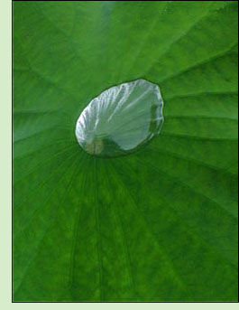

Meditation Meditation is not so much a practice or a path, but rather a way of life. An expression of Being that reveals that life is never anything more or less than what is actually happening. In order to realize the freedom inherent in the nature of living, meditation is a true friend and unfailing ally.While there are many practices and styles of meditation they all contain a common thread, and that is Awareness itself. Awareness is not a method or technique but is instead the basic commonality that all experiences share. It could be called the context within which everything happens. This has profound practical significance as it assists in opening and ease around states of fear, confusion and doubt. Moreover, awareness is the portal into what is often called the "ground of being." This ground, unlike the earth ground, is instead a groundless ground that is not dependant on anything or anyone. It is indeed another word for freedom. Direct insight into how the conditioned mind can be working reveals that it is this ground of freedom that is avoided through seeking and searching, not found. Meditation is about Awakening to life as it truly is, beyond habit, conceptions and beliefs. Within this is the possibility that the whole structure of needs that often drive and propel humans to live in limitation can be seen through and will thus dissolve. What remains is a natural and simple openness that unbinds what appears bound and uproots the seeking for something more complete or fulfilling through having more and different experiences. Awakened Living is not state or experience dependant. When there is no longer any need to get anything additional out of being alive, ironically being alive is the treasure that fulfillment of needs and desires promised but could never quite bring. |